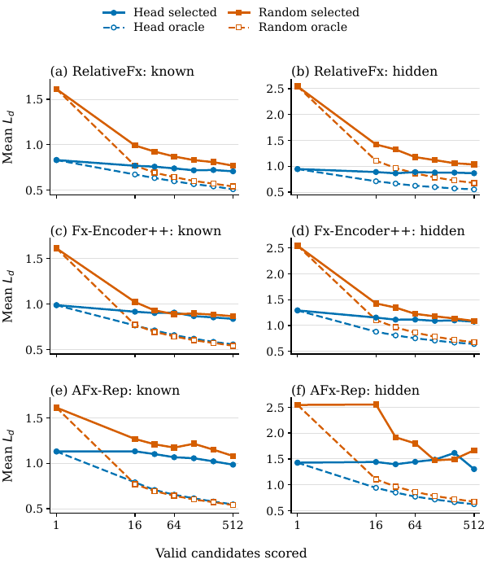

Post-hoc FX Registration and Rendered Verification for Audio Effect Transfer
Galaxy Audio Effect Team, Tencent Music Entertainment
We attach a lightweight registration head to a frozen audio-effect representation, propose a finite set of executable FX settings, and select among their rendered outputs. This avoids query-time parameter optimization while retaining audio-based verification.
CounterFX-200 Benchmark
Two adjacent, non-overlapping windows are taken from the same track. The same hidden FX chain is applied to both windows. The system receives the unprocessed source A and processed reference Bref; the processed source Atarget is withheld and used as an exact same-content evaluation target.
Audio Examples
Representative known- and hidden-topology examples from CounterFX-200. Each example occupies one row. Lower Ld indicates a closer match to the exact target. Only one recording plays at a time.
Supplementary Results
Candidate budget
Learned proposals are most useful at small budgets. With known topology, RelativeFx Head@16 obtains Ld = 0.769, compared with 0.770 for Random@512, using 32× fewer candidates.

Cross-representation comparison
The same post-hoc registration protocol is applied to three frozen representations. Values are selected mean Ld on CounterFX-200; FX-set F1 ignores effect order and parameters.
| Frozen representation | Known Ld ↓ | Hidden Ld ↓ | Hidden FX-set F1 ↑ | |||
|---|---|---|---|---|---|---|
| Head@16 | Head@512 | Head@16 | Head@512 | Head@16 | Head@512 | |
| RelativeFx | 0.769 | 0.708 | 0.888 | 0.865 | 0.701 | 0.725 |
| Fx-Encoder++ | 0.915 | 0.836 | 1.154 | 1.076 | 0.628 | 0.654 |
| AFx-Rep | 1.132 | 0.985 | 1.442 | 1.304 | 0.678 | 0.736 |
Proposal coverage and verifier gap
Oracle error is the best waveform match already present in a candidate pool. The selected-oracle gap therefore measures how much performance remains in candidate ranking after proposal generation.
| Representation | Topology | Head@16 | Head@512 | ||||
|---|---|---|---|---|---|---|---|
| Selected | Oracle | Gap | Selected | Oracle | Gap | ||
| RelativeFx | Known | 0.769 | 0.673 | 0.096 | 0.708 | 0.510 | 0.197 |
| Fx-Encoder++ | Known | 0.915 | 0.764 | 0.151 | 0.836 | 0.556 | 0.281 |
| AFx-Rep | Known | 1.132 | 0.791 | 0.341 | 0.985 | 0.548 | 0.437 |
| RelativeFx | Hidden | 0.888 | 0.710 | 0.179 | 0.865 | 0.552 | 0.313 |
| Fx-Encoder++ | Hidden | 1.154 | 0.881 | 0.273 | 1.076 | 0.643 | 0.433 |
| AFx-Rep | Hidden | 1.442 | 0.941 | 0.500 | 1.304 | 0.625 | 0.678 |
Optimization budget and audio match
In hidden-topology CMA-ES, the verifier cosine objective continues to improve with more calls, while output error is lowest at 2,048 calls. This difference motivates reporting waveform-level matching rather than the search objective alone.
| Renderer calls | 128 | 512 | 1,024 | 2,048 | 4,096 |
|---|---|---|---|---|---|
| Mean Ld ↓ | 1.088 | 0.955 | 0.932 | 0.918 | 0.933 |
| Cosine objective ↑ | 0.925 | 0.957 | 0.965 | 0.971 | 0.974 |
Matched runtime
Median end-to-end query time for 10-second audio, including proposal, rendering, candidate encoding, and selection. All GPU measurements use one NVIDIA L20. CPU and GPU use different renderer implementations and are not intended as a direct hardware comparison.
| Method | Calls | GPU time (s) | CPU time (s) | ||
|---|---|---|---|---|---|
| Known | Hidden | Known | Hidden | ||
| Direct head | 1 | 0.121 | 0.137 | 0.224 | 0.236 |
| Head@16 | 16 | 0.846 | 1.753 | 3.124 | 3.145 |
| Head@512 | 512 | 22.584 | 33.382 | 111.088 | 108.328 |
| Random@512 | 512 | 23.127 | 42.998 | — | — |
| CMA-ES@512 | 512 | 22.627 | 38.688 | — | — |
Perceptual evaluation
Twenty-seven listeners provided 648 five-point ratings. Across the 462 system-only ratings, subjective similarity correlates with negative Ld at Spearman ρ = 0.377, so the association is not explained only by the source and target anchors.
| Condition | Mean score ↑ | Ratings |
|---|---|---|
| Hidden target | 3.99 | 93 |
| Head@512 | 3.52 | 90 |
| Head@16 | 3.41 | 85 |
| CMA-ES@512 | 3.37 | 95 |
| Random@512 | 3.34 | 97 |
| Direct head | 3.23 | 95 |
| Source | 2.26 | 93 |
Additional observations
- Proposal and verification are distinct bottlenecks. Oracle curves improve steadily with budget, while selected curves flatten earlier.
- Audio matching does not require exact chain recovery. RelativeFx Head@512 reaches hidden-topology FX-set F1 = 0.725, while exact chain recovery is 14.0%.
- The output metric has perceptual support. Across 27 listeners and 648 five-point ratings, system-only scores correlate with negative Ld at Spearman ρ = 0.377.